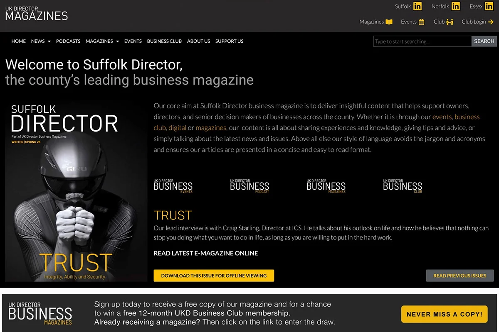
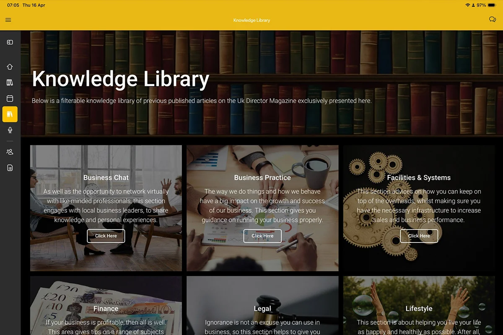

UK Director Magazine by Adam
Regional business publishing, built to scale. A long-term WordPress platform build for a multi-county digital media brand, growing from a single site into a full publishing and member ecosystem across Norfolk, Suffolk, and Essex.
The brief
Starting in 2018, the brief was to move an established regional business publication from Squarespace into a scalable WordPress environment. The brand already had a strong identity; the task was to carry it across cleanly and build a platform with room to grow.
What began as a rebuild became something more substantial. As the publication expanded across Norfolk, Suffolk and Essex, the requirements expanded with it. Podcasts, video content, regional editions and a paid member portal all came into scope over time.
The consistent thread throughout was control. The team needed to manage content independently, at scale, without relying on developers for every update.
The work
The site was rebuilt in WordPress using Elementor, with a content architecture designed around the publication's regional structure. Each county got its own presence — dedicated homepage, flipbook versions of the print magazine, and EPUB delivery for digital reading — while remaining part of the wider platform.
The build was designed to flex as the publication grew:
- Loop grids and dynamic layouts for repeatable content blocks
- Category-driven filtering across news, features and magazine issues
- A gated member portal with early access to content and private events
- A mobile app for iOS and Android with real-time notifications and member chat
The outcome
The platform operates as a full digital media hub serving business directors across three counties. Traffic has grown significantly since launch, content is easier to manage, and the experience holds consistently across all devices.
The team publishes independently. Articles surface automatically, regional pages update without manual rebuilds, and new content types slot in without disrupting existing structure.
The member portal adds clear commercial value. Exclusive content, early access to media and events, and direct communication between members gives the Business Club a reason to exist beyond the publication itself. The project continues to evolve as the publication grows.
For a deeper look at membership architecture across geographic tiers, see the Macro-Advisory case study.

